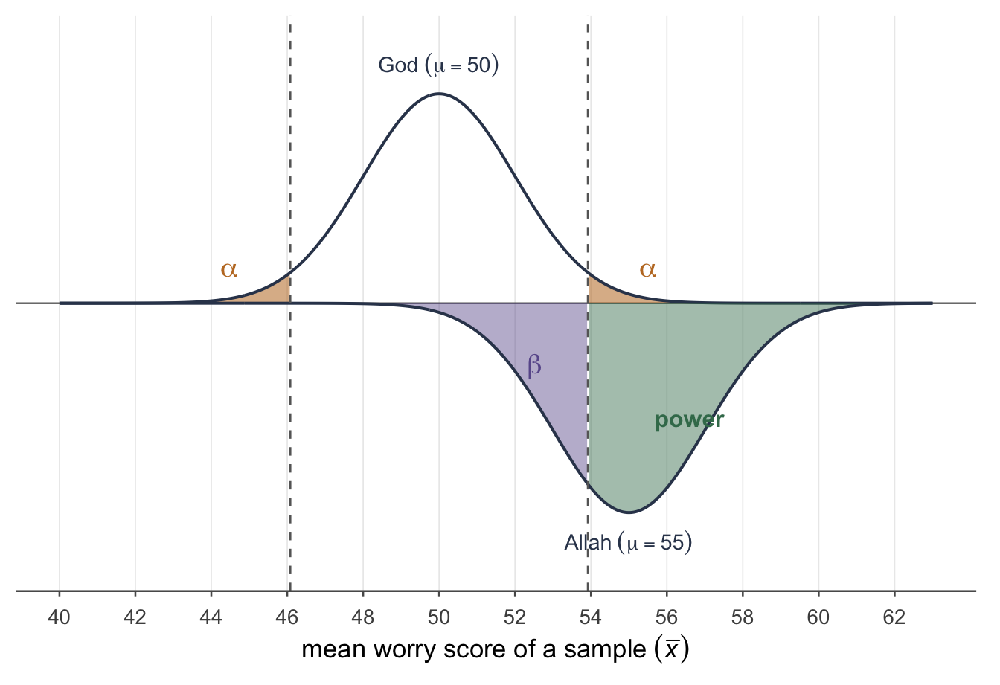
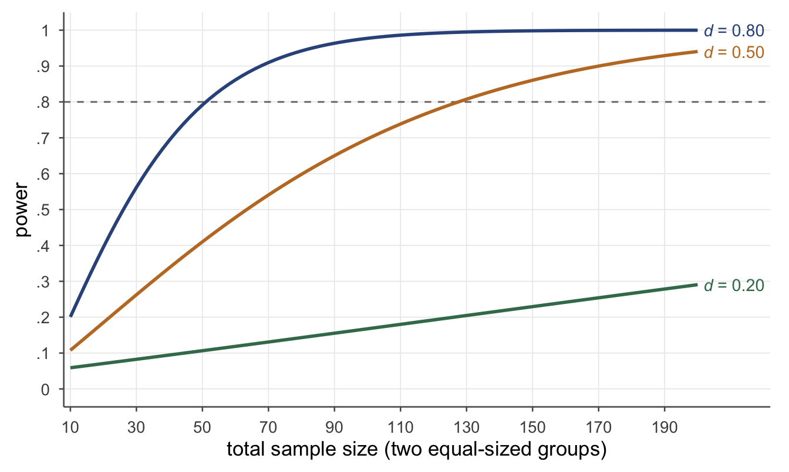
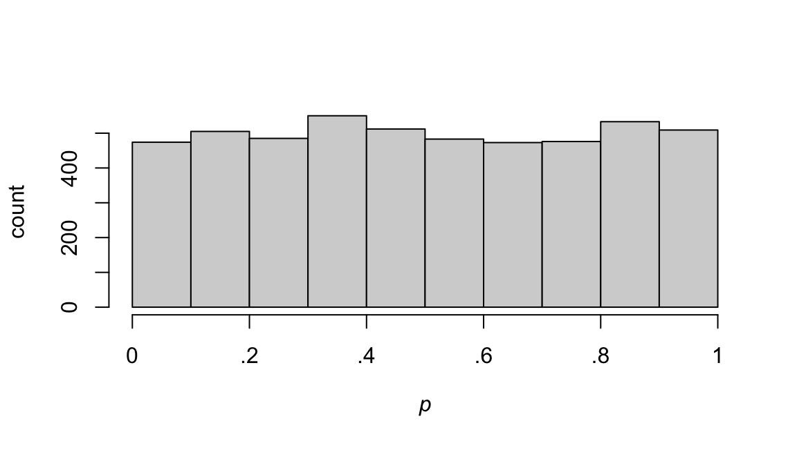
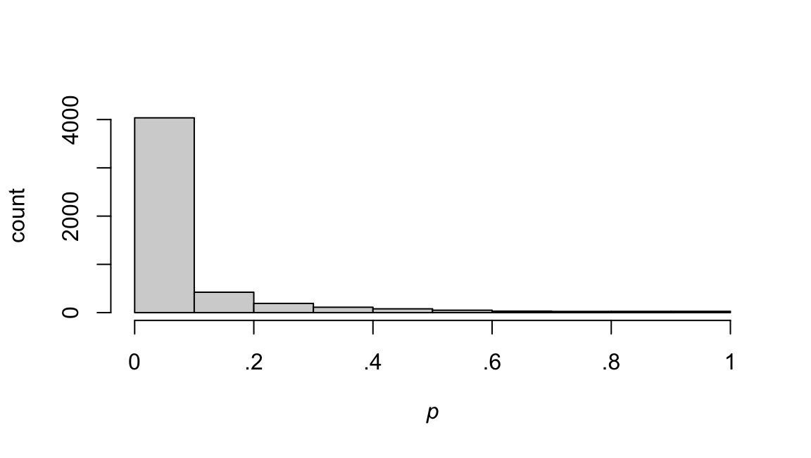

how big is the difference, and could you have seen it?
The bat had finished his report on the sleep training, and at the bottom, underlined twice, it said: worrying has fallen significantly.
He read it again and nodded.
“A little, or a lot?” asked the dormouse, who had been woken by the nodding.
“Significantly,” said the bat, and heard himself say it.
“A little, or a lot?” asked the dormouse once more, and was asleep again.
The bat looked at his underlined word, and it didn’t say either.
What you learn this week
why a p-value doesn’t tell you how big a difference is
Cohen’s d: a difference expressed in standard deviations
η²: what share of the differences belongs to the group
φ and Cramér’s V: the effect size next to χ²
when an effect is called small, medium or large
power: the probability that you actually see a real difference
working out effect sizes in R
Significant is not the same as large
For four weeks you asked one question: is there a difference? A test answers it with a p-value, and a decision. This week a second question joins it, and it matters at least as much: how big is that difference?
In everyday English, significant sounds like important. In statistics it means something more modest: your result would be rare if nothing were going on. How rare it would be is what the p-value measures. If , you reject . Whether the difference is large, or important, the word doesn’t say. Nor how sure you can be that there is a difference: the p-value works from to your data, not back (the reversal from week 1). In the jargon, statistical significance (what the test says) is contrasted with practical significance (large or important).
You see it best when you test the same difference on more and more people. Say poor sleepers score 2 points higher on the worry questionnaire than the general population, where the mean is 50 and the standard deviation 10. That difference stays 2 points. Only the sample grows.
The same difference of 2 points, at three sample sizes (z-test, = 10)
number of people (n)
standard error
z
p
25
2.00
1.00
.32
100
1.00
2.00
.046
400
0.50
4.00
< .001
With 25 people the difference is not significant; with 400 people it is, comfortably. The difference itself didn’t change. What changed is how rare that difference would be if nothing were going on: a larger sample gives a smaller standard error, and so a larger z and a smaller p. With enough people, every difference becomes significant, however small.
So a p-value mixes two things: how big the difference is, and how many people you have. Afterwards you can’t pull the two apart again. That’s why you put a number next to it that is only about size: the effect size.
That gives you a chain of three:
the effect: the difference itself, in the units of your measurement (here 2 points);
the test: how rare the difference would be if nothing were going on (the p-value, the decision);
the effect size: how big it is, on a scale that depends neither on your units nor on your n.
Why not just those 2 points? Because raw is rubbish. Is 2 points a lot? On a questionnaire where everyone scores between 48 and 52, yes; on one that runs from 0 to 200, no. You can only weigh a raw difference once you know how much people usually differ from each other. That’s why the effect sizes of this week are relative, or standardised: they measure the difference against the spread.
In the jargon, the first and the third link of that chain are both called an effect size. The effect itself, those 2 points, is the absolute or unstandardised effect size. The third link is the relative effect size; when this week just says effect size, it means that one.
Cohen’s d: how many times does the standard deviation fit in between?
The best-known effect size divides the difference by a standard deviation.
NoteCohen’s d
How many standard deviations apart are the two means? The vertical bars around it make the number positive: d says how big, not which way. You add the direction in words.
Those bars are called the absolute value. That’s a different ‘absolute’ from the absolute effect size above: there it means in points, raw.
You know this already. A z-score asks how many standard deviations one person lies from the mean. Cohen’s d asks the same, but for one mean against another mean. Same shape: how many times does the standard deviation fit in between?
The worry example. In week 1 a sample of poor sleepers had a mean of , against μ = 50 in the general population, where the standard deviation is 10. You rejected the null hypothesis that poor sleepers score 50 on average. How big is the difference?
The means are half a standard deviation apart.
TipSmall, medium, large
Cohen gave three benchmarks for d, also known as Cohen’s rules of thumb:
Cohen’s benchmarks for d
d
is called
below 0.20
negligible
from 0.20
small
from 0.50
medium
from 0.80
large
This practice book reads the benchmarks as lower bounds. So a benchmark is the same thing as a cut-off: from that number on, d is called small, medium or large. In this book, then, d = 0.45 is small, because 0.45 lies below 0.50.
Not everyone reads the benchmarks this way: the handout for this material calls the same 0.45 medium. So always say which two benchmarks your d lies between, as the worked answers do: d = 0.45 is small, between 0.20 and 0.50. Then whoever marks it knows what you mean, however they read the benchmarks.
You’ll also see moderate. Same thing, different name.
They are benchmarks, not laws. Cohen made them for when you have nothing better to go on. In a field where a lot is already known, you’re better off comparing with earlier research.
So the worry difference of 0.50 is medium.
Which standard deviation do you divide by?
With one mean that’s clear: the standard deviation of the scores (σ if you know it, as here; otherwise s of the sample). With two groups and with paired measurements you have a choice, and both choices can be defended.
Cohen’s d for the three t-tests
test
the difference
divide by
one mean
σ if you know it, otherwise s of the sample
two independent groups
s of the control group, or the pooled s
paired, before and after
the mean difference
s of the pre-test, ors of the difference scores
Whichever you take: say which. Two researchers who divide the same data differently get a different d, and both have calculated correctly.
If an exercise doesn’t say which, then with two groups take the s of the control group (or the pooled s if there is no control group), and with paired measurements the s of the pre-test. Those are the easiest choices to interpret; the reasons are below.
WarningThe letter d, twice
The mean of the difference scores is often written as (d-bar). That is not Cohen’s d: is a difference in points, Cohen’s d a difference in standard deviations. You’ll also see Cohen’s d with a hat, : an estimate from the sample.
Two groups: training versus control
You know the practice dataset slaapstudie from week 1: 30 students in their first year who sleep badly; half of them got sleep training. Everyone’s worrying was measured, before and after. For each person, take the drop: worry score before minus worry score after. Does worrying drop more in the training group than in the control group?
Drop in worry score, by group
n
mean drop
training
15
3.47
2.97
control
15
1.07
4.76
The difference is 3.47 − 1.07 = 2.40 points. Two choices for the standard deviation:
The control group. It shows how much people without training differ from each other in their drop. Then you’re saying: this is how big the effect of the training on the drop is, measured against the ordinary noise.
The pooled s: the two groups together. With two groups of equal size, that’s the square root of the mean of the two variances:
And then, just as above:
Both medium: the training group drops by roughly half a standard deviation more.
And now the test. Welch gives t(23.49) = 1.66, p = .11. Not significant. A medium difference, and yet you don’t reject the null hypothesis that the drop is, on average, the same size in both groups. That looks contradictory. Hold on to it for a moment; at the end of this week, with power, it falls into place.
Paired: the training group before and after
Now look only at the 15 people in the training group. Before the training their mean worry score was 54.73, afterwards 51.27: a drop of 3.47 points. The paired t-test says t(14) = 4.52, p < .001. Highly significant: a drop like that would be very rare if nothing were going on. But how big is that drop?
Divided by s of the pre-test (9.69): how much people differed from each other in worrying before the training.
That is small: between 0.20 and 0.50.
Divided by s of the difference scores (2.97, the s of the drop in the table above): how much the drops differ from one another.
That is large.
Small and large, from the same data. Both say something true:
Compared with how much people differ from each other in worrying (before the training, one scored 37 and another 72), a drop of 3.47 points is small.
But almost everyone in the training group worries a little less (12 of the 15 go down; two stay the same and one goes up by one point), and the drops are much alike. Compared with how much those drops differ from one another, the drop is large: it is very consistent.
If you want to know whether the effect of the training on worrying matters in daily life, the pre-test is the handiest one to divide by. You need the difference scores when you work out the power of a paired test; software does that for you. Always say which one you took.
Tipd doesn’t grow with n; t does
If you divide by the s of the difference scores, d looks just like the test statistic t:
The only difference is the . So . Here: . (Take d to three decimals: with 1.17 the rounding gives you a slightly different t.)
More people make t larger (and p smaller), but not d. That’s exactly why you put d next to it: the effect size is only about size.
η²: what share of the differences belongs to the group?
The second effect size for a t-test is called eta squared (η²). You work it out from what the test already gives you: t and the degrees of freedom (df).
NoteEta squared for a t-test
A proportion, always between 0 and 1: what share of all the differences in the outcome goes with the group. Also called the proportion of explained variance. (That’s exact only with the ordinary df; with Welch’s df it’s an approximation, and usually it doesn’t change the word small, medium or large.)
Think of a garden. All the differences in drop, between all 30 people, together are the whole garden. η² is the patch of that garden where the group has planted its flowers: the part of the differences that shows up in who got training and who didn’t.
Two groups. For the drop, t(23.49) = 1.66:
About a tenth of the differences in drop belong to the group.
TipSmall, medium, large for η²
Cohen’s benchmarks for η²
η²
is called
below .01
negligible
from .01
small
from .06
medium
from .14
large
Here too, as lower bounds. So the .10 of the sleep study is medium, just like the d of 0.50.
Paired. For the training group before and after, t(14) = 4.52:
Large. Here there is no second group: η² now says how big the drop is compared with how much the drops differ from one another. But the d with the pre-test said small. How can that be?
WarningTwo measures, two verdicts
What you do stays the same: for η² you use .01, .06 and .14, for d 0.20, 0.50 and 0.80. This box only explains why they can give a different word for the same data.
η² is calculated from t, and in a paired test t contains the standard deviation of the difference scores. So here η² follows the d of the difference scores (1.17, large), not the one of the pre-test (0.36, small).
On top of that: the cut-offs .01, .06 and .14 were made for two independent groups. There they go with d = 0.20, 0.50 and 0.80. With paired measurements (and with one mean too), η² comes out higher for the same d, because there , and with two groups roughly . An example with d = 0.50 and 15 people: two groups of 15 give η² = .06 (medium), paired with 15 people gives η² = .21 (large). And the worry example with one mean, with d = 0.50 and 25 people, gives η² = .21.
What you do with that: always say which effect size you report. Use the cut-offs of η² for η² and those of d for d, and don’t expect them always to give the same word.
NoteCheck in R — d and η² in the sleep study
You calculated by hand, with the rounded numbers from the tables. R checks without rounding. New to R? Read In R: working out effect sizes first, further on this week. This box can wait.
# the drop per personslaapstudie$daling <- slaapstudie$piekeren_voor - slaapstudie$piekeren_na# two groups: Welch, with the groups as a formulat_uit <-t.test(daling ~ groep, data = slaapstudie)t_uit$statistic^2/ (t_uit$statistic^2+ t_uit$parameter) # eta squared
t
0.1046463
# Cohen's d, with the s of the control groupgem <-tapply(slaapstudie$daling, slaapstudie$groep, mean)sds <-tapply(slaapstudie$daling, slaapstudie$groep, sd)(gem["training"] - gem["controle"]) / sds["controle"]
training
0.5044188
# paired: only the training grouptraining <- slaapstudie[slaapstudie$groep =="training", ]t_paar <-t.test(training$piekeren_voor, training$piekeren_na, paired =TRUE)t_paar$statistic^2/ (t_paar$statistic^2+ t_paar$parameter) # eta squared
t
0.5929825
mean(training$daling) /sd(training$piekeren_voor) # d, with the pre-test
[1] 0.3577044
mean(training$daling) /sd(training$daling) # d, with the difference scores
[1] 1.166092
R puts a name above each number (t, training): that’s the name of the piece it started from, not what comes out. The same numbers as by hand: .10 and 0.50; .59, 0.36 and 1.17.
φ and Cramér’s V: the effect size next to χ²
In week 4 you used χ² to test whether two categorical variables are related. χ² is a test statistic too, just like z and t, and not an effect size: it grows with the number of people. So you still need an effect size next to it.
The example. For 300 students we know whether they have a part-time job and whether they sleep badly.
Part-time job and sleep in 300 students
sleeps badly
sleeps well
total
part-time job
35
65
100
no part-time job
40
160
200
total
75
225
300
Of the students with a part-time job, a proportion of .35 sleeps badly; of those without one, .20. The expected counts if there is no association (row total times column total, divided by 300) are 25, 75, 50 and 150. Every cell differs from its expected count by exactly 10:
With one degree of freedom that’s p = .005: a significant association between having a part-time job and sleeping badly. How strong is that association?
Noteφ and Cramér’s V
For a 2 × 2 table: φ (phi).
For a larger table: Cramér’s V, with k the smaller of the number of rows and the number of columns.
Both lie between 0 and 1. In a 2 × 2 table k − 1 = 1, and then V is the same as φ.
Cohen’s benchmarks for φ
φ
is called
below .10
negligible
from .10
small
from .30
medium
from .50
large
A φ of .16 is small. Highly significant, and still a small association. And by the way: φ is just a correlation. Give everyone a 1 for part-time job and a 1 for sleeps badly (and a 0 otherwise), and the correlation between those two columns is .16.
For Cramér’s V the cut-offs depend on the size of the table: the larger k, the lower they are. You divide the cut-offs of φ by .
Lower bounds for Cramér’s V, by the size of the table
k − 1
small
medium
large
1 (2 × 2, and then V = φ)
.10
.30
.50
2
.07
.21
.35
3
.06
.17
.29
TipWhy χ² itself is not an effect size
Double every number in the table: 70, 130, 80, 320. The proportions stay exactly the same, but χ² becomes 16.00. φ stays . Just as with t, the test statistic grows with n, and the effect size doesn’t.
NoteCheck in R — χ² and φ
# the table, row by rowtabel <-matrix(c(35, 65,40, 160), nrow =2, byrow =TRUE)# without the continuity correction, as by handx2 <-chisq.test(tabel, correct =FALSE)x2
For a 2 × 2 table, chisq.test() applies a continuity correction (Yates’s) by default, and then gives a slightly smaller χ²: here 7.22 instead of 8.00. For φ you take the χ² without the correction, because only that one goes with the correlation. That’s why it says correct = FALSE. Here it makes no difference to two decimals (.16 against .16), but with small counts it does.
NoteIf you want to go further — risks and odds
In a 2 × 2 table you can also express the association in probabilities. The risk of sleeping badly is .35 with a part-time job and .20 without.
Risk difference: .
Risk ratio (RR): . So with a part-time job the risk is 1.75 times as large.
Odds: the probability that it happens, divided by the probability that it doesn’t. With a part-time job , without .
Odds ratio (OR): .
An RR or OR of 1 means: no association. These measures say something φ doesn’t: how many times as often.
Power: the probability that you see a real difference
Week 1 had the table with two ways to be wrong. The second was the Type II error: there is a difference, but your test doesn’t see it. The probability of that is called β (beta). This week, the other side of that coin.
NotePower
The probability that you reject , if a particular alternative is true: a particular alternative hypothesis ().
In full, the statistical power of a test: how good it is at actually seeing a real difference.
Watch the little word particular. A test doesn’t have one power. How large the power is depends on how large the real difference is.
Two worlds: God and Allah
Power is easiest to grasp with two worlds on one number line. They contradict each other, and only one of them can be right.
God says: poor sleepers just score 50 on average. That is the world of . That’s the world you did your test in, in weeks 1 and 2.
Allah says: no, they score 55 on average. That is the world of one particular alternative. Careful: in week 1, 55 was the mean of your sample (); here it’s the mean of the whole population (μ), in Allah’s world.
The worry example again: = 10, n = 25, so a standard error of 2, and a two-tailed test with α = .05. Calculated rather than counted, the critical values lie at , so 46.08 and 53.92. (Counting dots in week 1, you got 45 and 55; calculated, the boundaries lie slightly closer to the middle.) You set those boundaries in God’s world. But you can also lay them over Allah’s world, and see how often you reject there.

Figure 1: Two worlds on one number line. Top: the world of (μ = 50). Bottom, mirrored: the world of one particular alternative (μ = 55). The dashed lines are the critical values 46.08 and 53.92. Orange: α, false alarm. Purple: β, missed. Green: power.
Read the figure one world at a time, from top to bottom.
God’s world (top). The orange tails beyond the boundaries together make α = .05: that’s how often you reject while is true. A false alarm: a Type I error.
Allah’s world (bottom). The same boundaries, a different hill. If a sample mean falls between the boundaries, you don’t reject , while Allah is right: that’s the purple part, β. If it falls beyond a boundary, you rightly reject : the green part, the power.
Working out the power. How often does a sample mean in Allah’s world fall beyond 53.92? Turn that boundary into a z inside Allah’s hill:
In the figure you can already roughly see the answer: the green part is well over half of Allah’s hill. You can get it exactly in two ways.
With R as a calculator:1 - pnorm(-0.54) gives the probability to the right of , .705.
With Table A (in Dutch): at the table gives .2946, the probability to the left. So the probability to the right is 1 − .2946 = .7054: to three decimals, the same .705. Power is an area, just like every probability in Table A.
In an exam, a probability like that is given in the question.
The little piece to the left of 46.08 counts too, because there you also reject . But it lies so far from 55 that it is smaller than .001. So:
If poor sleepers really score 55 on average, then with 25 people you see it in about 7 out of 10 studies. In the other 3 you miss it. The difference of 5 points is a d of 0.50: medium.
NoteCheck in R — the power with pnorm()
pnorm(z) gives the probability to the left of z. So the probability to the right is 1 - pnorm(z).
# the critical boundary on the right: 50 + 1.96 times the standard errorgrens <-50+1.96*2grens
[1] 53.92
# how far is that boundary from 55, in standard errors?z <- (grens -55) /2z
[1] -0.54
# the probability to the right of z: the power1-pnorm(z)
[1] 0.7054015
.705, and with the negligible piece on the left added and rounded, .71.
Four knobs
How do you make the power larger? Start from the example above: n = 25, μ = 55 in Allah’s world, α = .05 and = 10. Then turn one knob at a time, and work it out again each time.
Power of the worry test, each time with one thing changed
what you change
standard error
right boundary
d
power
nothing
2.00
53.92
0.50
.71
more people: n = 50
1.41
52.77
0.50
.94
a smaller difference: μ = 53
2.00
53.92
0.30
.32
a stricter α: .01
2.00
55.15
0.50
.47
less spread: = 8
1.60
53.14
0.63
.88
More people make the standard error smaller. The two hills get narrower, overlap less, and the power goes up.
A larger real difference (a larger d) pushes Allah’s hill further away from God’s. Less overlap, more power. You usually don’t have your hand on that knob: reality decides how large the difference is.
A larger α (the significance level) moves the boundaries inward: more power. But also more false alarms. So a stricter α (.01) costs power.
Less spread (measuring more precisely) also makes the hills narrower. Note: then d gets larger too, because you divide the same difference by a smaller σ.
WarningOnly α moves the false alarms
A larger sample gives more power, but not more Type I errors. If is true, you reject in at most a fraction α of studies, however large your n. What a huge sample does do: make tiny differences significant. That’s the real warning, and you knew it already from the table at the top of this week.
How many people do you need?
You work out power before the study, in a power analysis. You choose the smallest difference you want to be able to see, and look for the sample that sees it with power .80: in 8 out of 10 studies. Which difference? The smallest one that matters in practice, or what earlier research found. If you know nothing, you often take Cohen’s medium d = 0.50.
Software draws that as a power curve. Below, for the test you learned in week 3: two independent groups of equal size.

Figure 2: Power of the t-test for two equal-sized, independent groups, two-tailed, α = .05, at three effect sizes. The dashed line is power .80.
Read off where a line crosses the dashed line at .80. Reading off gives a round number; calculated (with R) it’s exact:
for a large effect (d = 0.80) you need 52 participants, 26 per group;
for a medium effect (d = 0.50), 128, so 64 per group;
for a small effect (d = 0.20) you don’t come close even with 200: there you’re at .29. Calculated, you need 788, far outside the figure.
That’s how expensive a small effect is.
NoteIf you want to go further — working out the sample size for one mean
For the z-test for one mean you can find the n by hand. At power .80, the two peaks of God and Allah lie exactly 1.96 + 0.84 standard errors apart: 1.96 from God to the boundary (that’s what goes with α = .05, two-tailed), and 0.84 from the boundary to Allah. Why 0.84? If the boundary lies 0.84 standard errors to the left of Allah’s peak, then .80 of Allah’s hill lies to the right of the boundary: exactly the power you want. In R you find it with qnorm(.80): the z with .80 to its left, and because the hill is symmetric that’s the same distance. (That’s how you find 1.96 with qnorm(.975).) Without R, both are in Table D (in Dutch), in the row : column .025 and column .20. Expressed in d:
For the worry example, with d = 0.50:
Always round up: 32 people. With 31 you just miss the .80 (.795), with 32 you make it (.807).
Not significant: now what?
Back to the sleep study. The difference in drop between the groups was medium, and yet not significant (p = .11). You now know why that’s no riddle.
Suppose the training really has a medium effect on the drop in worrying: d = 0.50. What was the probability, then, that this study, with 15 people per group, would see it? Read it off at 30 participants in the power curve, or work it out: power = .26. A study like this misses a medium effect in about 3 out of 4 cases.
So this p-value says little. The difference may well be there; the study was too small to see it. That’s what week 1 meant by not significant is not the same as equal, now with a number attached. For a power of .80 you would have needed 64 people per group.
WarningYou work out power beforehand
Above it says supposed = 0.50. That’s Cohen’s benchmark for medium, chosen the way you would choose it beforehand. The sleep study, with the s of the control group, happened to come out at 0.50 as well, but that is not why this value was chosen. If you work out the power afterwards with the d you happened to find, you learn nothing new: a non-significant result then always gives a low power. It’s your p-value in disguise.
Too few and too many
A study with too little power is a bet you’ve half lost before you start. The sleep study showed it: even if the training really works, a study like that only sees it in .26 of cases. And then the report says “no significant difference”, and someone reads that as “the training doesn’t work”. All 30 participants took part for an answer that was never likely to come.
You can have too many, too. Measure a great many people and even a difference that doesn’t matter in daily life comes out significant (exam question 1 below shows one). And all those people gave their time for a question that far fewer could have answered.
That’s why you work out the power beforehand, and always put an effect size next to your p.
NoteIf you want to go further — simulating power in R
Power is a probability over a great many studies. In R you can simply do those studies: draw thousands of samples of 25, work out the z-test for each one and keep its p-value.
First in God’s world ( true, μ = 50):
set.seed(5)# one study: 25 people, mean, z, peen_p <-function(mu) { scores <-rnorm(25, mean = mu, sd =10) z <- (mean(scores) -50) / (10/sqrt(25))2*pnorm(-abs(z))}p_god <-replicate(5000, een_p(mu =50))hist(p_god, breaks =seq(0, 1, by = .1), main ="", ylab ="count",xlab =expression(italic(p)), xaxt ="n")axis(1, at =seq(0, 1, by = .2), labels =c("0", ".2", ".4", ".6", ".8", "1"))# how often do you reject H0 when H0 is true?mean(p_god <= .05)
[1] 0.0468

Figure 3: Five thousand p-values when is true.
All the bars are about the same height: if is true, a p between .9 and 1 turns up just as often as one between 0 and .1. So a high p-value is no sign that is right. And you reject in about .05 of the studies: that’s α, the false alarm.
Then in Allah’s world (μ = 55):
p_allah <-replicate(5000, een_p(mu =55))hist(p_allah, breaks =seq(0, 1, by = .1), main ="", ylab ="count",xlab =expression(italic(p)), xaxt ="n")axis(1, at =seq(0, 1, by = .2), labels =c("0", ".2", ".4", ".6", ".8", "1"))# how often do you reject H0, now that the alternative is true? That is the power.mean(p_allah <= .05)
[1] 0.7098

Figure 4: Five thousand p-values when μ = 55.
Now you reject in about .71 of the studies: the .71 you worked out by hand, give or take chance. That way you can find the power of any test, even a test for which there is no formula.
In R: working out effect sizes
Effect sizes don’t come out of R by themselves. You take the ingredients from what t.test() and chisq.test() give you, and work out the rest yourself. You need three things.
1. Taking a piece out of the output. You can store the result of a test under a name. With $ you pick out one piece. First the drop per person, as a new column (daling is Dutch for drop):
slaapstudie$daling <- slaapstudie$piekeren_voor - slaapstudie$piekeren_nat_uit <-t.test(daling ~ groep, data = slaapstudie)t_uit$statistic # the t
t
-1.656784
t_uit$parameter # the degrees of freedom
df
23.48564
The t is negative, while earlier it said 1.66. R puts the groups in alphabetical order (controle, the control group, before training), so it calculates control minus training. For η² that makes no difference, because t gets squared.
# eta squaredt_uit$statistic^2/ (t_uit$statistic^2+ t_uit$parameter)
t
0.1046463
2. A mean or a standard deviation per group. You can do that by choosing rows, as in week 1. Faster is tapply(): take this column, split it by these groups, and do this with it.
For a larger table you also need k for Cramér’s V, the smaller of the number of rows and columns: k <- min(nrow(tabel), ncol(tabel)), and then sqrt(x2$statistic / (sum(tabel) * (k - 1))).
Practice
NoteExercise 5.1 — Concepts
A study finds p < .001. What do you know then, and what don’t you know yet?
Why is “the groups differ by 3 points” not a good effect size on its own?
Write down the formulas for Cohen’s d with one mean and for η² with a t-test.
Complete: “The power of a test is the probability that …”. Why does the answer say a particular alternative?
Does the power get larger or smaller by:
lowering α from .05 to .01;
a smaller sample;
measuring more precisely, so that the scores spread less?
CautionAnswer 5.1
You know: your result would be very rare if nothing were going on. You reject ; the result is significant.
Not yet: how big the difference you found is. A p-value depends on the size of the difference and on the number of people, and with enough people every difference is significant. That’s why you put an effect size next to it.
And never: how sure you can be that there is a difference. The p-value works from to your data, not back.
Because you don’t know whether 3 points is a lot. On a scale where everyone scores close together, yes; on a scale with a lot of spread, no. Raw is rubbish: you have to measure the difference against the spread. Then you can also compare studies that used different questionnaires.
and .
“… that you reject , if a particular alternative is true.” A test doesn’t have one power: the larger the real difference, the larger the power. So you have to say for which alternative. Power = 1 − β.
Three answers:
smaller: the boundaries move outward;
smaller: a larger standard error, wider hills that overlap more;
larger: narrower hills, and the d gets larger.
NoteExercise 5.2 — Paired, in R and by hand
Use slaapstudie, now the control group: does their worrying change between before and after, without training?
Run the paired t-test in R. Fill in: “Worrying in the control group was … after than before, t(…) = …, p = ….” Is that significant?
Work out η², by hand and in R. Small, medium or large?
Work out Cohen’s d, once with the s of the pre-test and once with the s of the difference scores. What do you call each?
Show that if you take the s of the difference scores.
Can you conclude that worrying in the control group doesn’t change?
CautionShort answer 5.2
Lower; t(14) = 0.87, p = .40. Not significant.
η² = .05: small.
With the pre-test d = 0.12, negligible; with the difference scores d = 0.22, small.
Paired t-test
data: controle$piekeren_voor and controle$piekeren_na
t = 0.86827, df = 14, p-value = 0.3999
alternative hypothesis: true mean difference is not equal to 0
95 percent confidence interval:
-1.568199 3.701532
sample estimates:
mean difference
1.066667
# eta squaredt_con$statistic^2/ (t_con$statistic^2+ t_con$parameter)
t
0.0510978
# d, with the pre-test and with the difference scoresdaling <- controle$piekeren_voor - controle$piekeren_namean(daling) /sd(controle$piekeren_voor)
[1] 0.1157157
mean(daling) /sd(daling)
[1] 0.2241862
Before, a mean of 53.60; after, 52.53. “Worrying in the control group was lower after than before, t(14) = 0.87, p = .40.” But .40 > .05: you don’t reject the null hypothesis that worrying in the control group stays the same on average. So really: worrying was not significantly lower.
. Between .01 and .06: small.
The mean drop is 1.07.
With the pre-test: . Below 0.20: negligible.
With the difference scores: . Between 0.20 and 0.50: small.
. Take d to three decimals here; with 0.22 the rounding gives you a slightly different t.
No. Not significant is not the same as equal. With 15 people the power is small: even with a medium change (d = 0.50, measured with the difference scores) this test would see it in only about .44 of studies. R works that number out, with power.t.test(n = 15, delta = 0.5, type = "paired", strict = TRUE); you don’t have to do it by hand. All you can say is that you couldn’t show a change.
NoteExercise 5.3 — The phone in the other room
80 students study a text and then take a reading test. Half of them put their phone on the table, as always (the control group); the other half put it in another room.
Score on the reading test
n
M
SD
phone in another room
40
68.5
11.0
phone on the table
40
62.0
10.0
Welch’s test gives t(77.30) = 2.77, p = .007.
Work out η². Small, medium or large?
Work out Cohen’s d. You have to choose which standard deviation to divide by. What is a logical choice here, and why?
Also work out d with the pooled s.
Write a sentence as in a report, with the test and the effect size.
CautionShort answer 5.3
η² = .09: medium.
d = 0.65, with the s of the control group. That makes it medium.
= 10.51, d = 0.62.
See the worked answer.
CautionFull worked answer 5.3 — step by step
. Between .06 and .14: medium. Some 9 per cent of the differences in reading score go with where the phone was.
The control group (phone on the table): that’s how students differ in reading score when you change nothing.
Between 0.50 and 0.80: medium. A subjective choice; say in your report which s you took.
, so . Also medium.
For example:
Students whose phone was in another room scored higher on the reading test (M = 68.5, SD = 11.0) than students with their phone on the table (M = 62.0, SD = 10.0), t(77.30) = 2.77, p = .007, d = 0.65. The effect of where the phone was on the reading score is medium.
Note how it’s written: d = 0.65 with a zero in front, because d can be larger than 1. For η² and p you leave the zero off.
NoteExercise 5.4 — φ and V
In a 2 × 2 table with 120 people, χ²(1) = 4.32. Work out φ. Small, medium or large?
In a table with 3 rows, 4 columns and 300 people, χ²(6) = 30.00. Work out Cramér’s V. Small, medium or large?
Someone doubles all the counts in the table from a. What happens to χ², and what to φ?
CautionAnswer 5.4
. So that is small.
The smaller of 3 and 4 is k = 3, so k − 1 = 2.
Don’t forget that k − 1: without it you get .32. At k − 1 = 2, medium starts at .21, so .22 is medium.
χ² doubles along with it (8.64), because the deviations from the expected counts grow with n. φ stays the same: .
Go to 50 participants and look straight up. In what order do you meet the three lines? What does that tell you?
Follow the line for d = 0.50 from 30 to 130 participants. Roughly how much does the power rise?
A researcher expects a medium effect and wants power .80. How many participants do they need, and how many per group?
Complete the sentence: “Power .80 means: if …, then …”
The sleep study had 15 people per group. Read off the power for a medium effect.
A colleague wants 2,000 participants “to be on the safe side”. What do they gain by that, and what does it cost?
CautionAnswer 5.5
From bottom to top: d = 0.20 (around .11), d = 0.50 (around .41), d = 0.80 (around .79). So for the same number of people: the larger the effect, the larger the power.
From about .26 to about .81. More people, more power. With a small effect, though, the line rises very slowly.
The line for d = 0.50 crosses .80 at around 128 participants (reading off gives about 130; calculated, 128). That’s 64 per group: the curve assumes two groups of equal size.
If the real effect is d = 0.50 (and you test two-tailed with α = .05 and 128 participants), then you reject in 80 out of 100 studies. In the other 20 you miss the effect (β = .20).
At 30 participants on the line for d = 0.50: about .26.
They gain almost nothing: with a medium effect they were already at .80 with 128, and at 200 well above .90. It does cost: time, money, and the trouble of hundreds of people who weren’t needed. And with that many people even a tiny difference becomes significant; then they have to look extra carefully at the effect size.
NoteExercise 5.6 — Power by hand, and what α does to it
Now check two rows of the table in Four knobs yourself, with your calculator and Table A (in Dutch). Allah still says μ = 55, God μ = 50, and = 10.
Twice as many people:n = 50, α = .05. Work out the standard error (to three decimals; the table in Four knobs rounds it to two, but here you carry on with three), then the right boundary with 1.96, and then how far that boundary lies from Allah’s 55, in standard errors: a z. Look up the probability to the right of that z in Table A. That is the power.
A stricter α:n = 25, α = .01. Now the boundary lies at 50 + 2.576 times the standard error: 2.576 is the anchor for α = .01, two-tailed, with .005 in each tail (week 0). Do the same.
Put your two answers next to the table in Four knobs; that table was worked out in R. Do they match? And why does the power drop in b, while the number of people and the real difference stay the same?
CautionAnswer 5.6
First the standard error, then the boundary, then z:
In Table A, row −1.5 and column .08, you find .0571: the probability to the left. To the right is 1 − .0571 = .9429.
The standard error stays 2.00; only the boundary moves:
Rounded to two decimals, the way Table A wants it: 0.08. Row 0.0, column .08: .5319. To the right is 1 − .5319 = .4681.
Next to the table in Four knobs, which R worked out:
Exercise 5.6 with Table A and in R
z
Table A
R
a. twice as many people
-1.58
.9429
.9424
b. a stricter α
0.08
.4681
.4697
The same to two decimals: .94 and .47. The difference between Table A and R is at most .0016, and it comes from rounding the standard error, the boundary and z. R works it out without rounding; for a, with the line 1 - pnorm((50 + 1.96 * 10 / sqrt(50) - 55) / (10 / sqrt(50))). The little piece to the left of the left boundary, just as in the example, makes no difference: there z is −5.50 and −5.08, far beyond the end of Table A at −3.49, so smaller than .001.
In b, the two hills stay exactly where they were. Only the boundary moves outward, from 53.92 to 55.152, and so it ends up beyond Allah’s peak at 55. Then less than half of Allah’s hill lies beyond the boundary, and the power drops below .50. So a stricter α costs power. In a, something else happens: with more people the standard error gets smaller, the hills get narrower, and the boundary lies further from Allah’s peak, in standard errors. That’s how the power goes up.
Exam block
This is how you might meet it in an exam: multiple choice with four options, a number to fill in, or yes or no. All you need is your calculator: where you need a probability, it is given in the question. The exam doesn’t ask you to look anything up in Table A; you did that in exercise 5.6, to check yourself.
NoteQuestion 1 — multiple choice
A study compares 10,000 participants with the mean of the general population. The z-test gives p < .001, and the difference is d = 0.04. Which is correct?
The difference is large, because it is highly significant.
The difference is significant, but negligibly small.
The probability that there is no difference is smaller than .001.
The power of this study was too low.
CautionAnswer question 1
B. With 10,000 people even a tiny difference becomes significant: here z = d × √n = 0.04 × 100 = 4.00. But d = 0.04 lies far below 0.20. A mixes up significant (statistical significance) and large (practical significance). C is the reversal from week 1. D is wrong: this study actually had a great deal of power.
NoteQuestion 2 — fill in
A sample has and = 12. The null hypothesis is μ = 20. How large is Cohen’s d? Give two decimals.
CautionAnswer question 2
0.25. : small.
NoteQuestion 3 — multiple choice
A t-test for two independent groups gives t(48) = 2.00. How large is η²?
.04
.08
.92
2.00
CautionAnswer question 3
B. . A forgets to square; C puts df in the numerator instead of (that is 1 − η²); D is t itself.
NoteQuestion 4 — multiple choice
In a 2 × 2 table with 100 people, χ²(1) = 9.00. How large is φ?
3.33
.09
.30
3.00
CautionAnswer question 4
C. . B forgets the square root, D forgets to divide by n, and A divides the other way round: n by χ². Medium.
NoteQuestion 5 — multiple choice
Which change makes the power of a test larger?
lowering α from .05 to .01
a larger standard deviation in the population
a smaller real effect
a larger sample
CautionAnswer question 5
D. A larger n gives a smaller standard error and narrower hills. A, B and C all make the power smaller.
NoteQuestion 6 — yes or no
A researcher doubles their sample. Does that make the probability of a Type I error smaller?
CautionAnswer question 6
No. The probability of a Type I error is α, and you choose that yourself. A larger sample makes the probability of a Type II error smaller, and the power larger.
NoteQuestion 7 — multiple choice
Look at the power curve in Figure 2. How large is β for a large effect (d = 0.80) and a total sample of 40?
.20
.31
.69
.80
CautionAnswer question 7
B. At 40 participants the line for d = 0.80 is at about .69: that’s the power. β = 1 − .69 = .31. C is the trap: that’s the power itself, not β.
NoteQuestion 8 — multiple choice
What is the power of a test?
the probability that you reject , if is true
the probability that you reject , if a particular alternative is true
the probability that you don’t reject , if a particular alternative is true
the probability that is true
CautionAnswer question 8
B. A is α, C is β, and D is a probability that a test never gives.
NoteQuestion 9 — multiple choice
A paired t-test compares worry scores before and after a training. Which standard deviation may you divide by for Cohen’s d?
the mean of the pre-test
the standard deviation of the pre-test, or that of the difference scores
the standard error of the mean difference
the standard deviation of the population, and nothing else is allowed
CautionAnswer question 9
B. Both can be defended, and you say which one you took. A gives a change as a fraction of the mean, not a distance in standard deviations. C is the trap: divide by the standard error and you get t, not an effect size.
NoteQuestion 10 — yes or no
A study with 12 people per group finds no significant difference (p = .34). A power analysis beforehand had said: if the real difference is medium (d = 0.50), the power is .22. Does this study show that there is no difference?
CautionAnswer question 10
No. With power .22 you miss a medium difference in about 78 out of 100 studies, and a smaller difference even more often. So the fact that this study found nothing says little about the population.
NoteQuestion 11 — multiple choice
A group of 20 first-year students fills in the worry questionnaire. A t-test for one mean, against the mean of 50 in the general population, gives t(19) = 2.40. How large is η²?
.77
.54
.23
.11
CautionAnswer question 11
C.
Large: above .14. The other three are each a well-known mistake:
.11 forgets to square.
.54 is Cohen’s d, : a different effect size. Note: d divides by , with the number of people (20); η² works with df (19).
.77 puts df in the numerator instead of ; that is 1 − η².
Watch the word large. The same test gives d = 0.54, and that is medium. With one mean, η² comes out higher for the same d than with two groups; the box Two measures, two verdicts explains why. So your η² is not wrong. Just always say which effect size you mean.
Effect sizes at a glance
Which effect size goes with which test
test
effect size
formula
small · medium · large
t-test
Cohen’s d
0.20 · 0.50 · 0.80
t-test
η²
.01 · .06 · .14
χ², 2 × 2
φ
.10 · .30 · .50
χ², larger
Cramér’s V
depends on the table
And power: the probability that you reject if a particular alternative is true. Larger with more people, a larger real effect, a larger α and less spread.